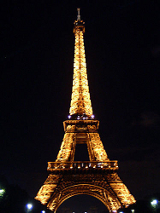

Actualmente más de la mitad de la población menor de 15 años tiene ascendencia extrajera, en particular de origen magrebí y de las ex-colonias francesas de África subsahariana.

París albergó durante la segunda mitad del siglo XIX varias exposiciones que reunían a expositores de todo el mundo. La más destacada tuvo lugar en 1889 con motivo de la conmemoración del primer centenario de la revolución. Para este evento fue construida la Torre Eiffel , que aunque debía ser desmontada una vez terminada la exposición, continúa actualmente en su emplazamiento original.
Francia es el principal destino turístico del mundo, y su capital concentra buena parte de la atención de la gran mayoría de turistas que visitan el país.